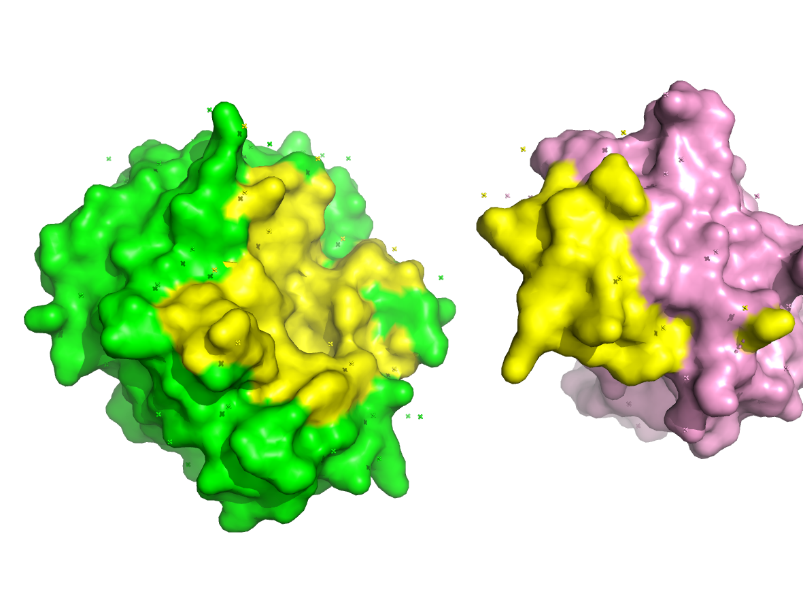

PyMOL
查看分子的3D结构; 常见GUI：DIscovery Studio Visuliazer，PyMOL，ICM Browser，UCSF Chimera等; python也可用nglview。
Pymol
Install open-source
从pymol-open-source下载（见：参考）；注：我的py是3.10，安装时注意版本。
pip install pymol-2.6.0a0-cp310-cp310-win_amd64.whl ## pymol
pip install pymol_launcher-2.5-cp310-cp310-win_amd64.whl ## pymol python api
CLI
Example:按照顺序尝试了如下命令
pymol ## or: pymol 1fpu.pdb
## or: load http://www.rcsb.org/pdb/files/xxx.pdb
## or: fetch 1oky 1t46 1fpu 1AVX
load pdb/1oky.pdb
load pdb/1t46.pdb
load pdb/1fpu.pdb
load pdb/1AVX.pdb
### Set Styles/layouts
set cartoon_cylindrical_helices = 1
set cartoon_smooth_loops = on
set cartoon_discrete_colors = on
set_color color1, [167,219,247]
set label_distance_digits, 2
### Print Chains
print(pymol.cmd.get_chains('model 1oky') ) ## ['A']
print(pymol.cmd.get_chains('model 1t46') ) ## ['A']
print(pymol.cmd.get_chains('model 1fpu') ) ## ['A','B']
print(pymol.cmd.get_chains('model 1AVX') ) ## ['A','B']
### Print Fasta
fasta_1AVX_A = cmd.get_fastastr("model 1AVX and chain A")
print(fasta_1AVX_A)
### align (structures to structure)
### 1t46's A Button-->align-->to molecule-->1oky
cmd.align('model 1oky', 'model 1t46')
cmd.align('model 1fpu', 'model 1t46')
### Select Objs
select selc_resA = chain A and (not resi 125) and (model 1AVX)
select selc_resB = ((resi 1-90+100+102+108-111) and model 1AVX)
select selc_resC = chain A and model 1AVX
### Unselect Objs
disable selc_resA selc_resB selc_resC 1AVX
### Delete Objs
### ALL: delete all
delete 1oky 1fpu 1t46
### show/hide 一个命令plot一次，不需要就hide
show ribbon
show mesh
hide ribbon
hide mesh
pymol.cmd.show('mesh','model 1AVX')
pymol.cmd.hide('mesh','model 1AVX and chain A')
hide mesh
pymol.cmd.show('surface','model 1AVX')
### seperate Chains
create A_1AVX=(model 1AVX and chain A)
create B_1AVX=(model 1AVX and chain B)
delete 1AVX
### Coloring
color green,A_1AVX
color pink,B_1AVX
### Highlight Interface
### !!! affected by movement btw A_1AVX B_1AVX
### show sph interface_AB
select interface_AB = (byres ((A_1AVX within 5 of B_1AVX)\or (B_1AVX within 5 of A_1AVX)))
color yellow,interface_AB
disable interface_AB ## Unseen
### label a selection
## !! a resi has 7 atom, will plot 7 label if not limit CA
select selc_resi_100 = name CA and resi 100
label selc_resi_100, 'my anno text'
### Rotate (mouse-left click-drag)
### Move (mouse-roll press-drag)
### Zoom (mouse-right click-drag)
orient
origin A_1AVX
rotate y, -45, A_1AVX
translate [-10,0,0], A_1AVX # [x,y,z]
origin B_1AVX
rotate y, 45, B_1AVX
translate [10,0,0], B_1AVX # [x,y,z]
zoom interface_AB
### ray & Save
png 1.png,10cm,dpi=300,ray=1

Python
Example
import pymol
### or http://www.rcsb.org/pdb/files/xxx.pdb
pymol.cmd.load('pdb/1fpu.pdb')
pymol.cmd.load('pdb/1AVX.pdb')
pymol.cmd.get_chains('model 1AVX') ## ['A', 'B']
pymol.cmd.get_fastastr("model 1AVX and chain A") ## '>1AVX_A\nIVGGYTCAAN..\n'
pymol.cmd.remove('solvent') ## or anything, e,g, model 1fpu
pymol.cmd.show('mesh','model 1AVX')
pymol.cmd.hide('mesh','model 1AVX')
### select selc_res = ((resi 1-90+100+102+108-111) and model 1AVX)
pymol.cmd.select('selc_res','(resi 1-90+100+102+108-111) and model 1AVX')
pymol.cmd.color('yellow','selc_res')
### label a selection,
pymol.cmd.label(selection='name CA and selc_res',expression = 'resn') ## expr: res index/name ...
### Q: how to set my lables?? using pseudoatom
pymol.cmd.pseudoatom(selection='name CA and selc_res',name='PS1',label = 'PS1 anno')
pymol.cmd.png('py_pymole.png',ray=1) ## PNG is the only image format supported by PyMOL
pymol.cmd.save('py_pymole.pse') ## save as pymol session
expr:
The symbols defined in the label name space for each atom are:
name, resi, resn, resv, chain, segi, model, alt, q, b, type,
index, rank, ID, ss, vdw, elec_radius, label, elem, geom,
flags, color, cartoon, valence, formal_charge, partial_charge,
numeric_type, text_type, stereo
参考
pymol-open-source: https://www.lfd.uci.edu/~gohlke/pythonlibs/#pymol-open-source
PyMOL by Schrödinger: https://pymol.org/2/
PyMOL Doc: https://pymol.org/dokuwiki/doku.php?id=loading
PyMOL Usage_1: https://zhuanlan.zhihu.com/p/490972358
PyMOL Usage_2: https://zhuanlan.zhihu.com/p/494570068
PyMOL cmd usage: https://pymol.org/pymol-command-ref.html
PyMOL cmd usage: https://zhuanlan.zhihu.com/p/416707495
PyMOL美化
Pymol-align-rmsd: https://zhuanlan.zhihu.com/p/347743101